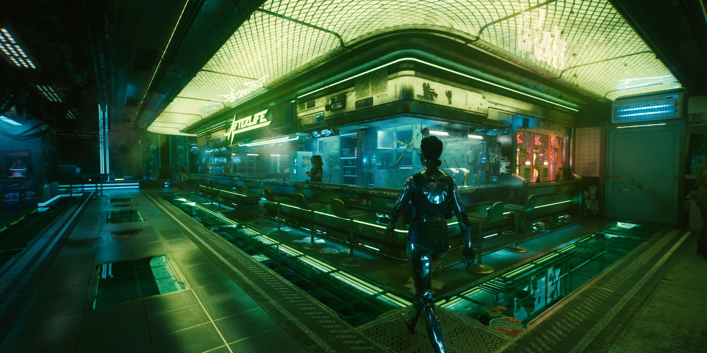
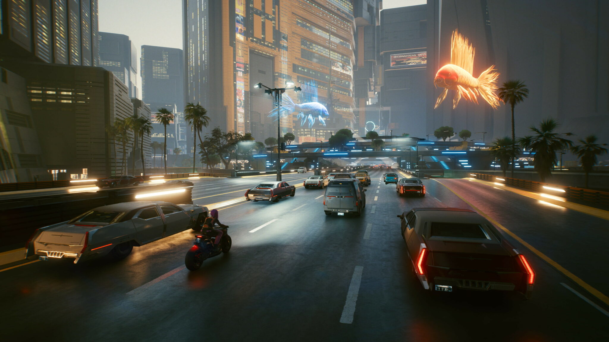

A dedicated, persistent world
Your server keeps running when players log off. Economies, factions and stories continue — the world remembers, because you host it.
// CREATE A SERVER
A dedicated Cyberpunk 2077 server that stays online for your community — with your rules, your identity, and gameplay you design. If you can imagine the world, you can run it.
// WHAT A SERVER GIVES YOU
Your server keeps running when players log off. Economies, factions and stories continue — the world remembers, because you host it.
Whitelist or open door, hardcore or casual — you set the rules, pick the staff, and shape the culture of your community.
Add jobs, economies, missions, vehicles and UI through resources — drop-in packages of gameplay. Use what the community shares, or script your own.
Your server page in the public browser shows your world, mode, language and player count — discovery is built into the platform.
// FROM RP TO RACING TO UNKNOWN
OPEN//77 doesn't ship a game mode — it ships the platform. A hardcore roleplay city, a ranked racing league, a survival district, a social hub with zero combat, or something nobody has built yet: they're all just servers.


// HOW IT WORKS
Download the dedicated server software and run it on your own hardware or a rented machine. It's a normal server process — you own it entirely.
Configure your slots, rules, language and mode. Add resources for the gameplay you want — community-made or your own.
List your server in the public browser. Players find you by mode, language and region — and their client auto-downloads everything your world needs.
Honest status: the dedicated server software ships in a later pre-alpha milestone — nothing to download yet. This page shows the intended flow so you can start planning your world now. See the roadmap.
// FOR BUILDERS
Architecture, dedicated servers, the resource format and the scripting API design live in the documentation — written for people who build.